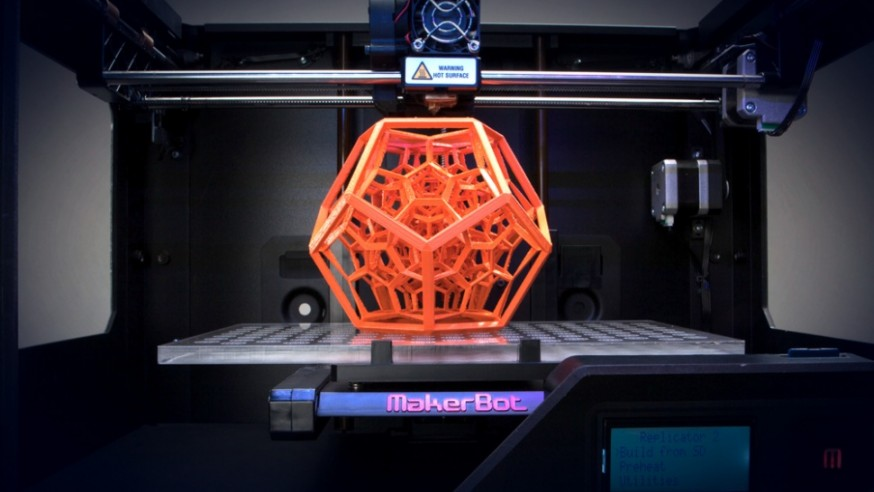

BIENVENIDOS AL MUNDO DE LA IMPRESION 3D
La impresión 3D ha evolucionado de una forma asombrosa en los últimos años, hasta el punto de que ya puede replicar maquinaria compleja y funcional. El 3D actuará como una fuerza disruptora en el mundo de los negocios. La impresión 3D, supone una nueva revolución industrial ligada al mundo digital. Se sustancia en una nueva forma de producción, la “fabricación aditiva” (additive manufacturing), que se realiza a través de la superposición de capas de material hasta conseguir el producto buscado. Este nuevo modelo de fabricación permitirá prescindir de muchas herramientas de fabricación y adaptar los procesos de producción a las necesidades del mercado de una forma mucho más. La evolución de la tecnología permite afirmar que estamos en un punto de inflexión en el que la impresión 3D está lista para convertirse en una alternativa viable a los procesos de producción tradicionales en muchos aspectos.